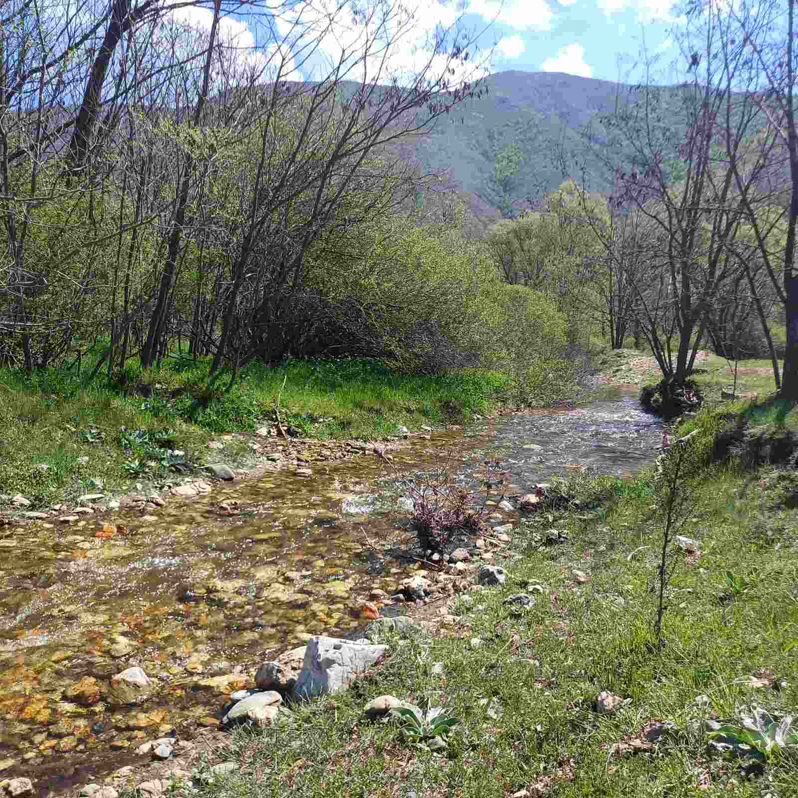
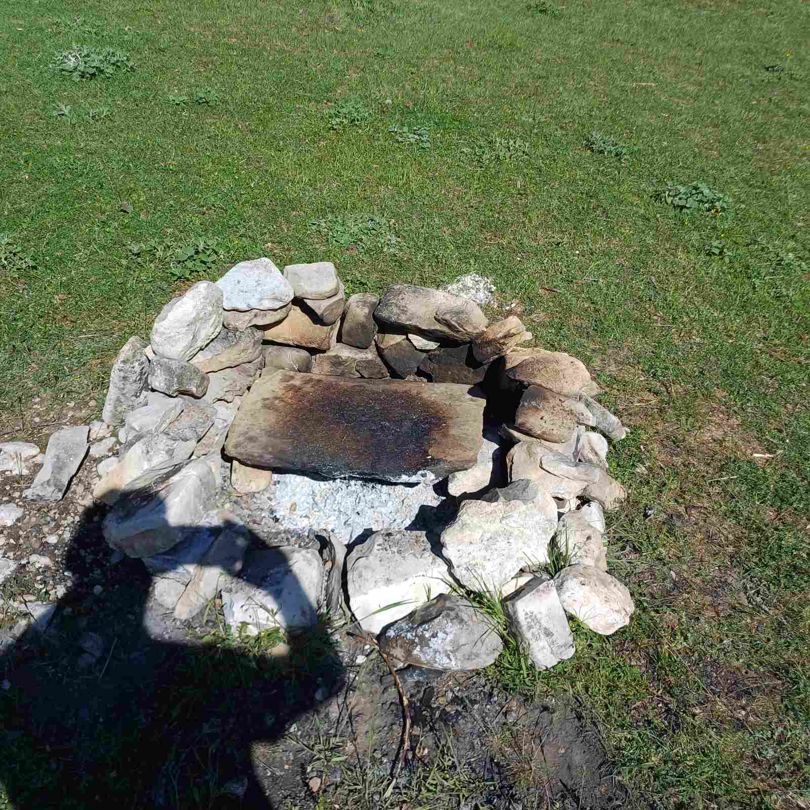
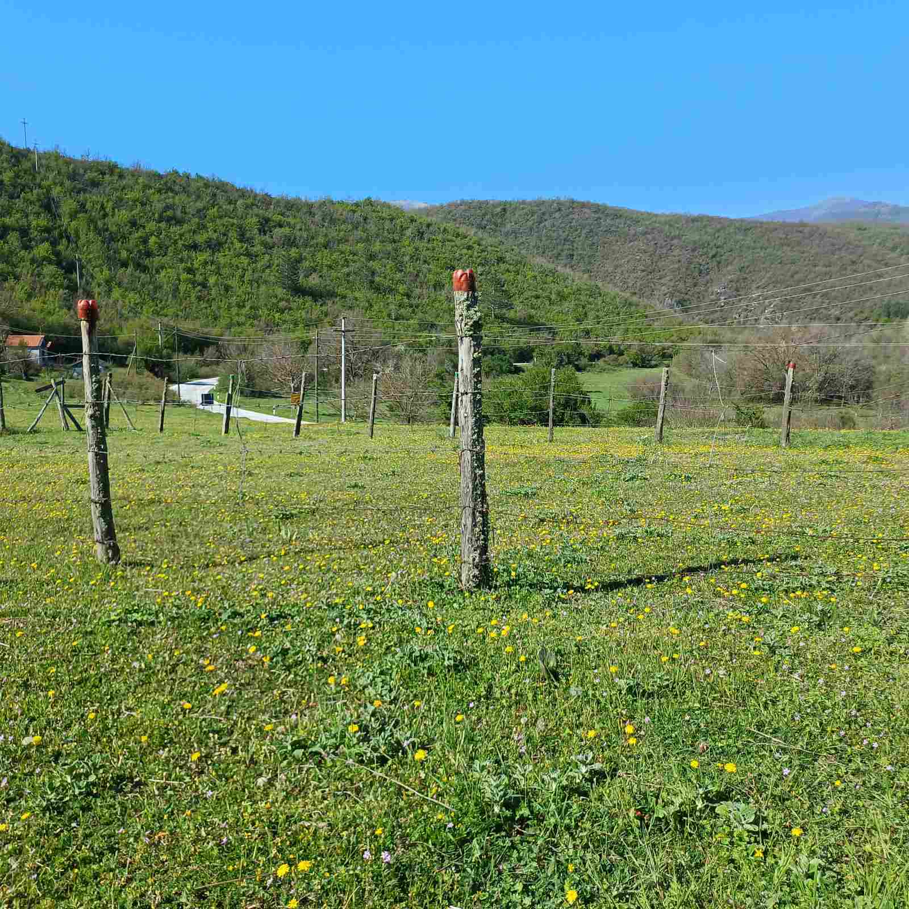
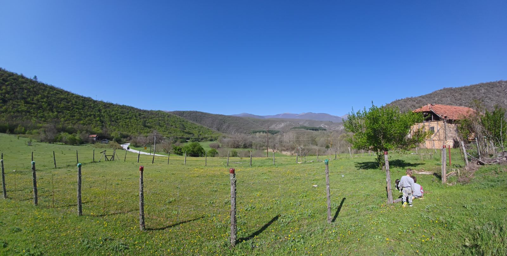

selo

selo

selo

crkva
Naselje Dragov Dol je smešteno u središnjem delu Severne Makedonije. Od
sedišta opštine, gradića Makedonski Brod, naselje je udaljeno 20 km
severno. Reljef: Dragov Dol se nalazi u oblasti Poreče, koja obuhvata
središnji deo slika reke Treske. Dato područje je izrazito planinsko.
Selo se nalazi u dolini leve pritoke reke Treske. Zapadno od naselja
uzdiže se planina Pesjak. Nadmorska visina naselja je približno 520
metara
DOJDETE DA GO VIDITE